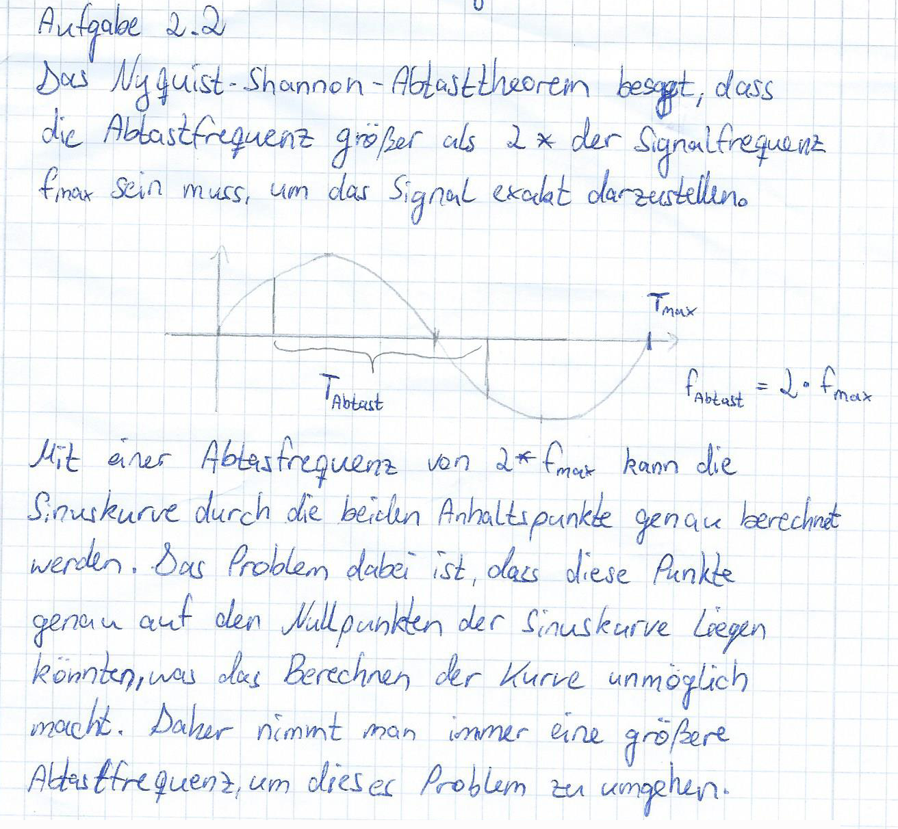
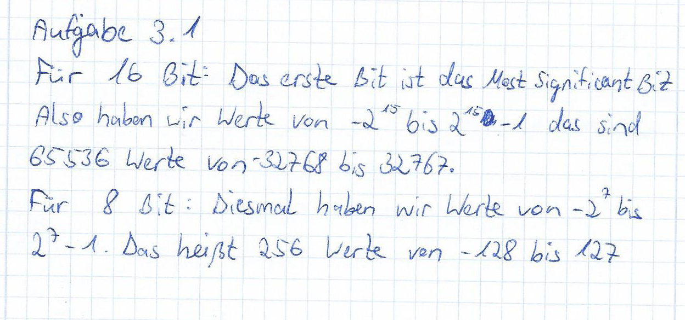

Das Verfahren zur Vermeidung von Aliasing, auf Soundkarten bezeichnet man als „idealer Tiefpass“. Dieses Verfahren beschreibt eine Funktion, die durch eine Grenzfrequenz B einen Filter besitzt, die nur Frequenzen hindurchlässt die unter der Grenzfrequenz liegen. Alles was größer ist wird blockiert. Diesen „idealen Tiefpass“ gibt es allerdings nur in der Theorie. In der Praxis kann der „ideale Tiefpass“ auf Grund von unendlich langen Impulsantworten nicht erreicht werden. Der „reale Tiefpass“ kann annähernd an den „idealen Tiefpass“ mit der Formel: H(f) = rect(f/2B) berechnet werden. B – Grenzfrequenz f – Frequenz rect - Rechtecksfunktion
Downsampled Sine_hi01
Downsampled Sine_lo01

Sprache 10Bit Verlust

Sprache 12Bit Verlust

Sine_hi01 Quantisiert
Sine_lo01 Quantisiert